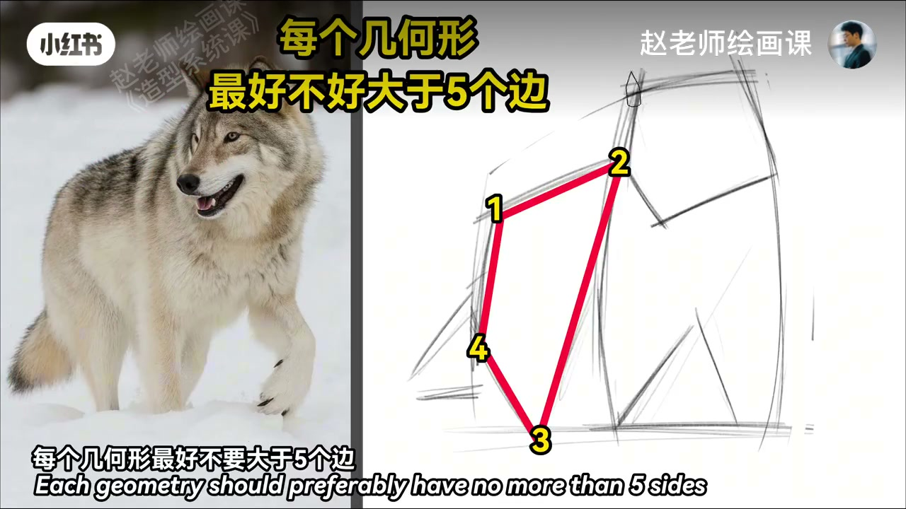
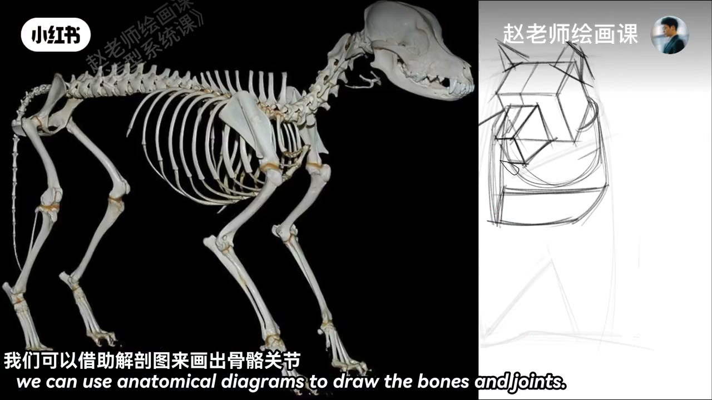
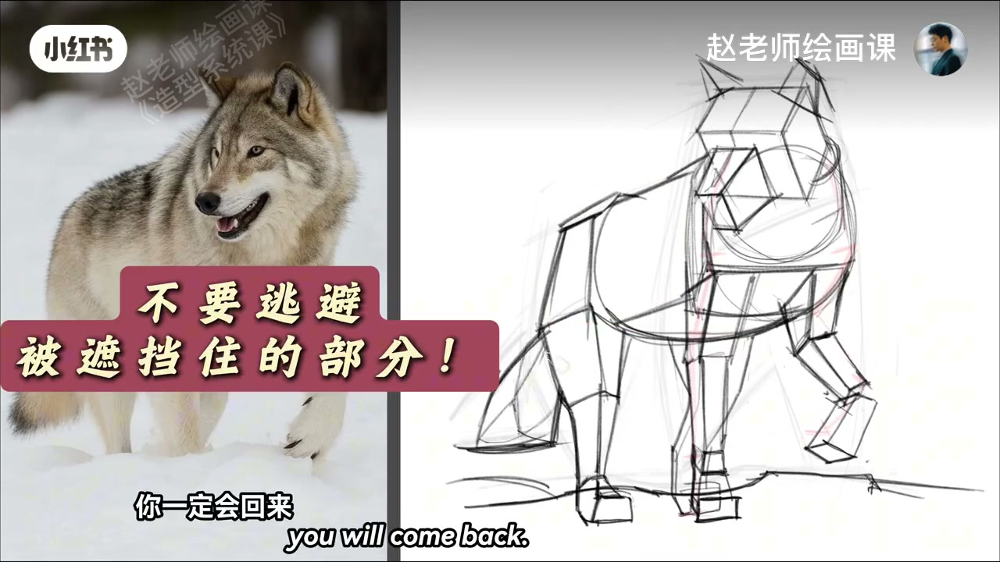
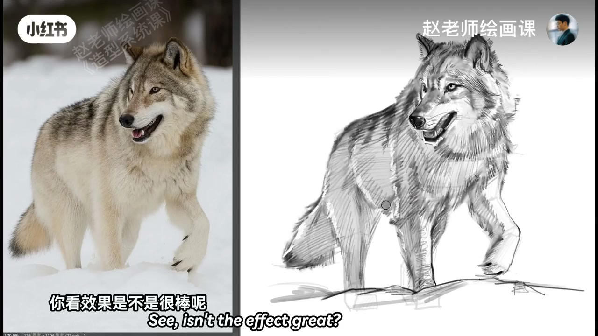

内容要点
画一只北美灰狼。几何抓形阶段每个几何形最好不要大于五个边，观察才不会陷入琐碎；头部是两个稍有错位的立方体，额头和鼻梁中线平行；脖子圆柱，胸腔是 T 型体块。前肢一部分在雪地里看不见——可借助解剖图画出骨骼关节，就一目了然。腰的圆柱和臀部是分开的；后面挡住的腿、前面被雪遮住的脚，都要努力画出来，虽然麻烦，坚持下去你会回来感谢我。有了体块支撑，刻画细节一点都不慌：毛发顺着结构转折用笔，光影根据体块主动调整；再细画五官加点高光收官。
知识结构
≤5边；T型胸；雪下关节也画。
毛发顺转折；光影跟体块。
看不见不等于不存在：遮挡与雪埋的腿脚仍要靠解剖补全，体块才完整，细节才有地方长。
00:00-00:50五边以内＋雪下也要画
今天画一只北美灰狼。几何抓形阶段，每个几何形最好不要大于五个边，观察就不会陷入琐碎；头部是两个稍有错位的立方体，额头和鼻梁的中线是平行的；脖子是个圆柱，胸腔是 T 型体块。
前肢一部分在雪地里看不见也不用担心，可以借助解剖图来画出骨骼关节，这样一目了然。腰的圆柱和臀部是分开的；后面挡住的腿、前面被雪遮住的脚，都要努力把它们画出来——虽然很麻烦，但坚持下去你一定会回来感谢我。00:12／00:30／00:48。



00:50-01:18体块上的毛发光影
有了体块的支撑，我们刻画细节的时候一点都不带惊慌。毛发要顺着结构的转折来用，光影可以根据体块来主动调整——你看效果是不是很棒？再细画一下五官加点高光，OK 完美收官。
下期想看哪一种动物，评论区告诉我。01:05。

完整转录（19段）
以下文本由 Whisper medium 模型自动转录，可能存在少量识别误差，已尽可能修正。
今天我们来画一只,北美贿郎
在几何抓性阶段,每个几何型,最好不要大于五个边
观察就不会陷入琐碎,头部是两个一点异常的立方体
额头和鼻梁的中线是平行的
脖子是个圆柱,胸腔是T型体块
前肢的一部分在雪地里看不见,但是不用担心
我们可以借助解剖图,来画出骨骼关节
这样就一目了然了
腰的圆柱和臀部是分开的
后面挡住的腿,还有前面被雪遮住的脚,都要努力把它们画出来这样做
虽然很麻烦,但是坚持下去,你一定会回来感谢我的
有了体块的支撑
我们刻画细节的时候,是一点都不带惊慌的
毛发要顺著结构的转折来用
光影可以根据体块来主动的调整
你看效果,是不是很棒呢
再细画一下五官加点高光,OK完美收官
下期你想看哪种动物的造型示范呢
评论区告诉我